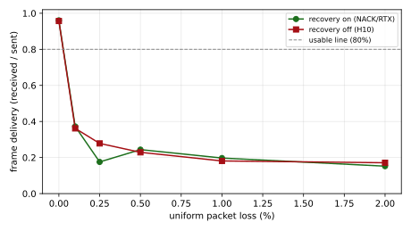

refutedGoal 2 boundary behaviour (§7.8), follow-up to H10
Claim
H10 found that with recovery off, frame delivery collapses below 0.1% packet loss. H12 re-runs the identical loss sweep with NACK/RTX retransmission on, changing only the recovery setting. With lost packets retransmitted, delivery should stay high where the recovery-off run collapsed, lifting the loss boundary well above 0.1%. If delivery is no better than the recovery-off run, retransmission is not helping at these loss rates.
Recovery does not rescue delivery under iid loss. With the full reactive toolbox on (NACK/RTX retransmission + PLI keyframe requests + a 100 ms receiver budget to wait for retransmissions), frame delivery is essentially unchanged from the recovery-off run (H10): at 0.1% loss 37% vs 36%, at 0.5% 24% vs 23%, at 1% 20% vs 18%, at 2% 15% vs 17%. The largest gain at any loss level is 1.6 percentage points, and at 0.25% recovery is slightly worse. RTX is engaged (rtprtxsend present and retransmitting) but does not move the metric.
This revises H10, and the cause is now isolated. Recovery does not lift the cliff because the bottleneck is not recoverable packet loss but a receiver-side VP8 reference-chain desync -- a single early gap breaks inter-frame prediction and, with a 60-frame keyframe interval, NACK/PLI cannot re-anchor before the next loss re-breaks the chain (delivery moves only 103 to 112 frames). Both arms are transport-healthy, about 98% of bytes delivered and all 600 frames sent. So the loss cliff is a codec/GOP/jitterbuffer-config effect, not SCReAM's loss tolerance and not a recovery gap. frames_depayloaded is honest but strict (complete-decodable frames); a shorter GOP or a re-anchoring receiver would move the boundary far more than retransmission does.
Loss still collapses delivery hard, and H10 and H12 agree on the numbers (about 18-20% delivery at 1% loss either way); that part stands. What is overturned is the remedy. Recovery as configured here is not the fix, and the mechanism behind the collapse must be isolated first. An early budget-0 config also confirmed NACK is a no-op without a receiver budget to wait for retransmissions.
Limitations
A clean A/B with H10: same loss levels, same networks, same workload and ceiling; only recovery (nack on, rtx_buffer_ms 500) differs. PLI and FEC stay off, so this isolates NACK/RTX retransmission alone.
Uniform iid loss {0, 0.1, 0.25, 0.5, 1, 2} %. The recovery-on boundary may lie above 2%; this sweep matches H10's range for the contrast rather than hunting the new cliff (a higher-loss sweep would find it).
rtx_buffer_ms is 500, so retransmissions older than ~500 ms cannot be served; a tighter latency budget or smaller buffer would weaken recovery.
Workload-specific (realmotion-avi, 1280x1024 MJPEG, 10 fps, 60 s), 4000 kbps ceiling, keyframe interval 60 frames. 3 reps per cell. Boundary signal is frame delivery.
Figures

Frame delivery vs packet loss, recovery ON vs OFF (H10). NACK/RTX retransmission lifts delivery from the recovery-off cliff.
Tables
Frame delivery by packet loss — recovery on vs off
frame delivery
0.0%
0.1%
0.25%
0.5%
1.0%
2.0%
recovery on
0.961
0.372
0.176
0.244
0.197
0.152
recovery off (H10)
0.957
0.362
0.278
0.229
0.181
0.171
Experimental setup
h12-loss-recovery-on
SCReAM loss sweep with recovery ON (NACK/RTX), the H10 twin.